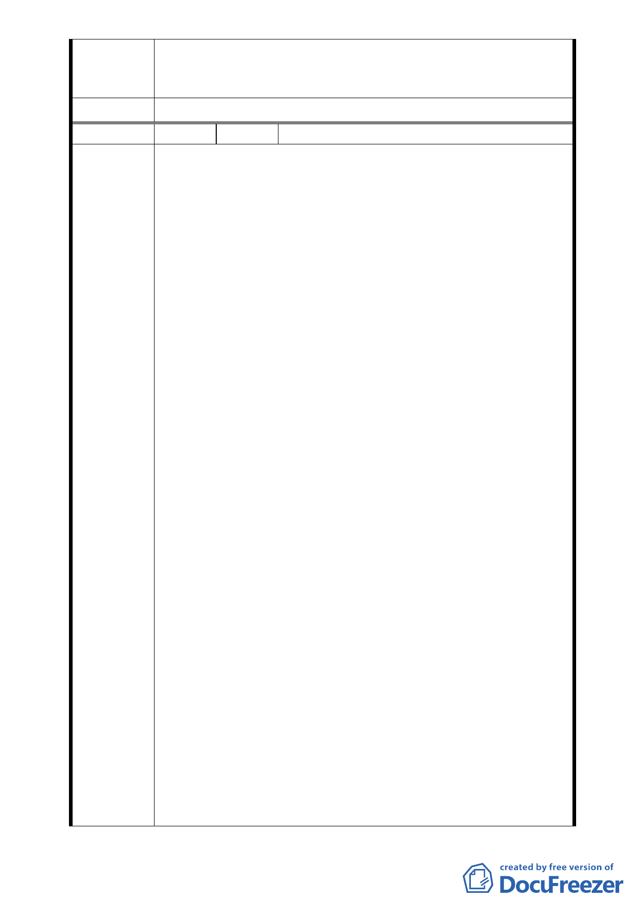

計畫說明書中加註係供堂方自行使用、不得有營利之行
為，至所存放骨灰罈數量是否予以載述或設限將提報大
會決定。
委員會決議 本案主要計畫依市府所提修正後內容通過。
編 號 ２ 陳情人 宋德慈等 6 人
一、本都市計畫變更之目的「為協助政府推展慈善，教育文化
等社會服務事業兼具宗教與社會福利等功能云云」。查慈
惠堂成立至今將近三十年，內有圖書館、活動中心、禮堂
等，經常辦理慈善、社教及其他公益活動；都市計畫變更
與否並不影響其功能及運作，欲變更都市計畫為宗教特定
區實為多此一舉。
二、週邊之交通狀況
慈惠堂唯一之進出道路為福德街251巷，僅8米寬，外接之
主要道路福德街為ll米寬，街道巷弄均已十分狹窄，又缺
乏公用停車場，自用車輛均沿街停放。加上慈惠堂週邊為
住宅區，人口密集，瑠公國中、福德國小又近在咫尺，每
逢上下班，上下學及星期假日登山民眾；現有道路已不堪
負荷！若慈惠堂擴大規模多目標經營，週邊之交通狀況不
堪想像，必定癱瘓。如遇災害發生不知該如何救災。福德
街多為老舊社區，街道狹窄已無空地再開闢新道路；由於
交通狀況負荷過重實不宜變更都市計畫，讓其擴大經營，
此其二。
陳 情 理 由 三、居住環境與週遭社區之評估
松山慈惠堂週遭為人口密集之住宅區及兩所學校瑠公國中
及福德國小。住宅區及文教區首重周圍環境之單純及清靜。
慈惠堂之宗教活動對居民生活已造成影響；如用擴音器廣
播、誦經、呼叫信徒，夜間施放煙火影響安寧。居民基於
敦親睦鄰多予容忍。如再擴大經營，喧嘩吵雜，環境髒亂，
交通阻塞，對居住環境勢必造成巨大衝擊，此其三。
四、公共安全評估
1、水土保持
慈惠堂於84年已有排水系統，沈沙設施，植生及擋土牆
等。 因目前未過度開發足堪使用。未曾有重大之天然災
害發生。一但過度開發擴大經營，現有之水土保持設施，
是否能負荷值得深思。又福德街底下無大型排水幹線；
如果過度開發豪雨無法及時排洩，勢必波及鄰近居民造
成災害。
2、防災評估
慈惠堂唯一進出道路為福德街251巷，僅8米寬，且兩側
停滿自用車輛，又欠缺公共停車場，現有道路對防災避
-8-